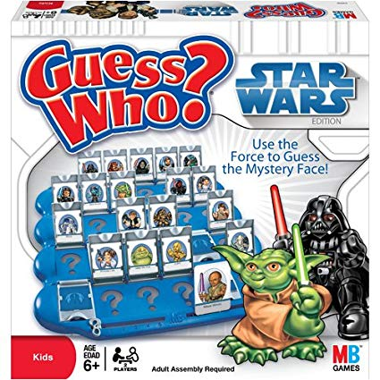

Guess Who?
Star Wars edition

Are you the best Jedi detective out there? Let’s play a game to find out.
Guess what else comes with the dplyr package? A Star Wars data set.
Open the data set:
- Load the
dplyr package from your library()
- Pull the Star Wars dataset into your environment.
library(dplyr)
people <- starwars
Rules
- You have a top secret identity.
- Scroll through the Star Wars dataset and find a character you find interesting.
- Or run
sample_n(starwars_data, 1) to choose one at random.
- Keep it hidden! Don’t show your neighbor the character you chose.
- Take turns asking each other questions about your partner’s Star Wars character.
- Use the answers to build a
filter() function and narrow down the potential characters your neighbor may have picked.
For example: Here’s a filter() statement that filters the data to the character Plo Koon.
mr_koon <- filter(people,
mass < 100,
eye_color != "blue",
gender == "male",
homeworld == "Dorin",
birth_year > 20)
Elusive answers are allowed. For example, if someone asks: What is your character’s mass?
- You can respond:
- My character’s mass is equal to one less than their age.
- Or if you’re feeling generous you can respond:
- My character’s mass is definitely more than 100, but less than 140.
My character has NO hair! (Missing values)
Sometimes a character will be missing a specific attribute. We learned earlier how R stores missing values as NA. If your character has a missing value for hair color, one of your filter statements would be is.na(hair_color).
WINNER!
The winner is the first to guess their neighbor’s character.
WINNERS Click here!
Want to rematch?
How about make it best of 3 games?
Plots with ggplot2
Plot the data, Plot the data, Plot the data
The ggplot() sandwich
A ggplot has 3 ingredients.
1. The base plot

we load version 2 of the package library(ggplot2), but the function to make the plot is only ggplot(). No 2. Sorry.
2. The the X, Y aesthetics
The aesthetics assign the columns from the data that you want to use in the chart. This is where you set the X-Y variables that determine the dimensions of the plot.
ggplot(scrap, aes(x = origin, y = amount))

3. The layers or geometries
ggplot(scrap, aes(x = origin, y = amount)) + geom_col()

Colors
Now let’s change the fill color to match the origin.
ggplot(scrap, aes(x = origin, y = amount, fill = origin)) +
geom_col()

Explore!
Try making a column plot showing the total amount of scrap for each destination or for each item.
ggplot(scrap, aes(x = destination, y = amount )) + geom_col()
Explore!
Try making a scatterplot of any two columns.
Hint: Numeric variables will be more informative.
ggplot(scrap, aes(x = __column1__, y = __column2__)) + geom_point()
Colors
Now let’s use color to show the origins of the scrap
ggplot(scrap, aes(x = destination, y = credits, color = origin)) +
geom_point()

This is a A LOT of detail. Let’s make a bar chart and add up the sales to make it easier to understand.
ggplot(scrap, aes(x = destination, y = credits, fill = origin)) + geom_col()

It’s still tricky to compare sales by origin. Let’s change the position of the columns.
ggplot(scrap, aes(x = destination, y = credits, fill = origin)) +
geom_col(position = "dodge")

More Plots
Colors
Now let’s use color to show the destinations of the scrap.
ggplot(scrap, aes(x = origin, y = credits, color = destination)) +
geom_point()

Spock-tip!
One easy way to experiment with colors is to add layers like scale_fill_brewer or scale_colour_brewer to your plot which will link to RcolorBrewer palettes so you can have accessible color schemes.
Bar charts
This is way too much detail. Let’s simplify and make a bar chart that adds up all the sales. Note that we use fill= inside aes() instead of color=. If we use color, we get a colorful outline and gray bars.
ggplot(scrap, aes(x = origin, y = credits, fill = destination)) +
geom_col()

Let’s change the position of the bars to make it easier to compare sales by destination for each origin? Remember, you can use help(geom_col) to learn about the different options for that plot. Feel free to do the same with other geom_’s as well.
ggplot(scrap, aes(x = origin, y = credits, fill = destination)) +
geom_col(position = "dodge")

Facet wrap
Does the chart feel crowded to you? Let’s use the facet wrap function to put each origin on a separate chart.
ggplot(scrap, aes(x = origin, y = credits, fill = destination)) +
geom_col(position = "dodge") +
facet_wrap("destination")

Themes
You may not like the appearance of these plots. ggplot2 uses theme functions to change the appearance of a plot. Try some.
ggplot(scrap, aes(x = origin, y = credits, fill = destination)) +
geom_col(position = "dodge") +
facet_wrap("destination") +
theme_bw()

Labels
You can also change the axis and title labels using the labs function.
ggplot(scrap, aes(x = origin, y = credits, fill = destination)) +
geom_col(position = "dodge") +
facet_wrap("destination") +
theme_bw() +
labs(title = "Scrap sales by origin and destination",
x = "Origin",
y = "Total sales")

Drop 2.2e+06 scientific notation
Want to get rid of that ugly scientific notation? We can use options(scipen = 999). Note that this is a general setting in R. Once you use options(scipen = 999) in your current session, you don’t have to use it again (like loading a package, you only need to run the line once when you start a new R session).
options(scipen = 999)
ggplot(scrap, aes(x = origin, y = credits, fill = destination)) +
geom_col(position = "dodge") +
facet_wrap("destination") +
theme_bw() +
labs(title = "Scrap sales by origin and destination",
x = "Origin",
y = "Total sales")

Challenge
Let’s say we don’t like printing so many zeros and want the labels to be in Millions of credits. Any ideas on how to make that happen?
Explore!
Be bold and make a boxplot. We’ve covered how to do a scatterplot with geom_point and a bar chart with geom_col, but how would you make a boxplot showing the prices at each destination? Feel free to experiment with color ,facet_wrap, theme, and labs.
May the force be with you.
Save plots
You’ve made some plots you can be proud of, so let’s learn to save them so we can cherish them forever. There’s a function called ggsave to do just that. How do we ggsave our plots?
Let’s try help(ggsave) or ?ggsave.
# Get help
help(ggsave)
?ggsave
# Run the R code for your favorite plot first
ggplot(data, aes()) +
.... +
....
# Then save your plot to a png file of your choosing
ggsave("results/plot_name.png")
Spock-tip!
Sometimes you may want to make a plot and save it for later. For that, you give your plot a name. Any name will do.
# Name the ggplot you want to save
my_plot <- ggplot(...) + geom_point(...)
# Save it
ggsave(filename = "results/Save_it_here.png",
plot = my_plot)
Learn more about saving plots: http://stat545.com/